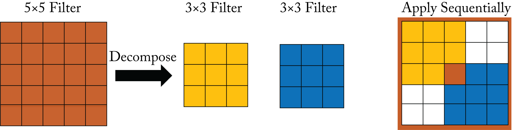
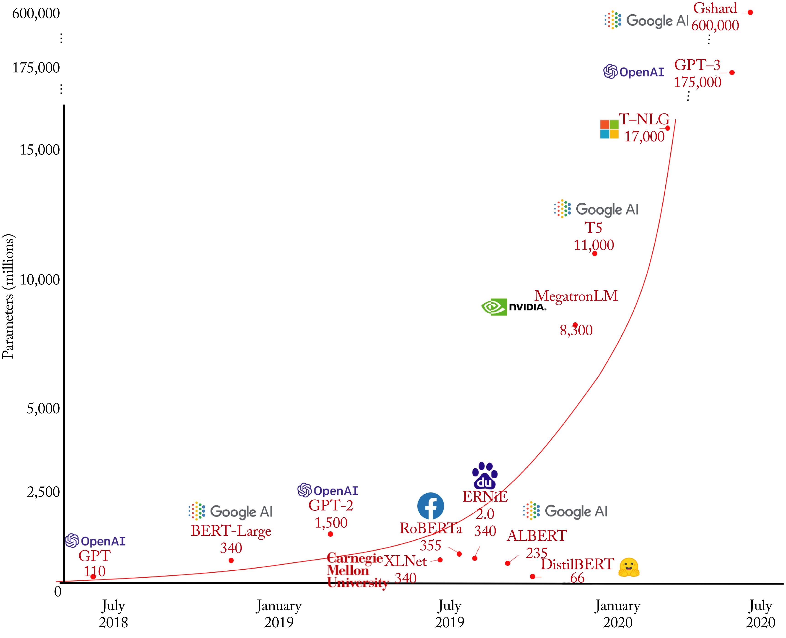

Chapter 3: Models and Applications
The main types of workloads where DL models are used in production are recommender systems, computer vision, and NLP.
Recommender systems are typically the most prevalent class of models at hyperscalers, given the significant revenue they generate. Neural (DL-based) recommenders usually have two main components: an embedding layer and a NN, typically an MLP. The embedding layer maps high-dimensional sparse data to low-dimensional dense data. For instance, a movie recommender may have a dataset with \(100\) million users, each rating a few of the 10,000 available movies. This dataset is sparse since most users only watch a tiny subset of the movies. An embedding layer maps this sparse representation to a dense representation and then passes it to the MLP. Standard recommender models are Wide & Deep (W&D), Neural collaborative filtering (NCF), Deep & Cross Network (DCN), Deep Interest Evolution Network (DIEN), and Deep Learning Recommender Model (DLRM), covered in Section 3.1.
Computer vision models have multiple convolutional layers, often followed by a normalization function, such as batch normalization, and a nonlinear activation function, such as ReLU. Standard computer vision models are Inception, ResNet, MobileNet, UNet, Mask-RCNN, SSD, YOLO, DCGAN, and StyleGAN, covered in Section 3.2.
NLP includes natural language understanding (NLU), speech recognition, speech generation, and speech-to-speech translation. Many of these workloads use an embedding layer to map tokens or words (represented as one-hot vectors) into a low-dimensional dense representation. A one-hot vector word representation is a high-dimensional vector of all zeros except a one at the corresponding word index.
There are two main types of NLP models: RNN-based (including LSTM-based and GRU-based) and transformer-based models. RNN-based models typically have lower latency compared to transformer-based models, which require significantly more computations but typically have higher statistical performance. Standard NLP models are sequence-to-sequence, Transformer-LT, BERT, Deep Speech 2, and Tacotron, covered in Section 3.3.
Some workloads use multimodal models, where a unified output combines the last layers from multiple models. For instance, an autonomous driving vehicle may use a multimodal model that combines radar, LiDAR, and visual input. A person ID model may combine a voice ID model and a face ID model. Other workloads may use models sequentially. For instance, a recommender may use a language model as a preprocessing step in a search query, or an image descriptor may use a computer vision model followed by a language model.
We discuss RL topologies popular in academia and with some industry adoption in Section 3.4. Several applications may benefit from RL, including hardware and software design (see Section 10.1). RL topologies fall nonexclusively under three types of algorithms: Q-learning, policy optimization, and model-based. The most well-known is the model-based AlphaGo, which beat the Go world champion Lee Sedol [SHM+16].
In all these workloads, determining the best model that meets the accuracy requirements within a computational and memory budget requires experimentation. Also, each topology can require significant engineering effort to design. Recently, there are newer techniques known as AutoML, which includes neural architecture search (NAS), that automatically develop topologies for a particular task and hardware target, reducing the manual engineering effort at the expense of much higher computation. Section 10.1 discusses NAS techniques.
3.1 Recommender Systems Topologies
Recommender systems, also known as recommendation engines or recommenders, are the most important type of DL algorithms at hyperscalers. They can provide significant monetization opportunities; their utility and market impact cannot be overstated. Despite their importance, only 2% of DL publications focus on recommenders, and the published results are often not reproducible [DCJ19].
Recommender systems are categorized into two approaches, and a hybrid of these two is common.
-
Content-based systems recommend items to a user based on their profile and their user-item interaction.
-
Collaborative filtering recommends items to a user based on the user-item interactions from similar users.
The input can be structured data, such as databases, or unstructured data, such as text and images. CNNs and RNNs can be applied to images and text, respectively, to extract features to input into a recommender. The recommended items can be ads to click, merchandise to purchase, videos to watch, songs to listen, social contacts to add, and news and social media posts to read. Recommender systems recommend items based on user features, item features, user-item ratings, and contexts, such as the time, day, and season. User-item ratings can be explicit or implicit based on user-item interaction. Implicit feedback includes the amount of time spent reading a news article, listening to a song, or viewing a clip. Details on the recent advances in context-aware recommender systems (CARS) are available elsewhere [RD19].
The total number of user-item combinations can reach quintillions, and adding context further increases that number. Netflix has around \(200\) million users and over 13,000 titles [Lov19]. Google Play has over \(1\) billion users and over \(1\) million apps [CKH+16]. eBay has more than \(180\) million buyers and over \(1.3\) billion listings [Don19; Pad19]. Alibaba has \(2\) billion products and serves as many as \(500\) million customers per day [Fel19]. This huge catalog results in memory size bottlenecks on the hardware platform. If every combination requires one byte, then the total user-item combinations would require \(1\) exabyte of memory, which is \(4\times\) more than the total storage of the largest supercomputer Summit. eBay clusters items into categories and utilizes user-category (rather than user-item) to reduce the number of combinations [Bro19].
Rather than ranking potentially billions of items, a large-scale recommender system breaks the process into two stages to meet the latency requirement and reduce the number of computations. First, a recall (candidate generator) stage selects several items that may be of interest to the user. Second, a ranking stage scores each item and selects those shown to the user [Bro19]. The recall step selects a set of items (for instance, \(1000\)) that may be of interest to a particular user, each one represented as a vector. The dot products between the vector representing the user and each of the \(1000\) item-vectors are computed. The items producing the highest dot products are then recommended to the user.
Despite using a two-stage approach, a significant challenge of large-scale recommender systems is the large memory required, in particular for the embedding tables to embed users and item features. Baidu's Phoenix Nest online advertising recommender models can exceed \(10\) TB, dwarfing the capacity of a GPU. Therefore, the model is partitioned into embeddings on the CPU and the NN on the GPU on Baidu's AIBox [ZZX+19].
Content-based recommenders use features, known as metadata, for each item (such as movie genres and IMDb ratings) and recommend items based on the similarities to other items the user has liked. A profile for each user is learned based on their likes and used to evaluate the recalled items to make a recommendation. Other features can include embedding representations (using RNN, CNN, or hand-engineered features) of written reviews, movie summaries, and still images. Content-based recommenders do not use information or ratings from other users.
Collaborative filtering (CF) recommends items based on user-item interactions across multiple users. Collaborative filtering uses no metadata or domain knowledge about the items; instead, it learns all the feature vectors. This eliminates the dependency of manually chosen features at the expense of requiring more data. A rating matrix \(\mathbf{R}\), also known as the utility matrix or user-interaction matrix, contains the ratings across various users and items. Collaborative filtering learns a user matrix \(\mathbf{U}\) and an item matrix \(\mathbf{V}\) composed of user and item feature vectors of equal dimension, respectively, such that the squared differences between \(\mathbf{R}\) and the dense matrix \(\hat{\mathbf{R}} = \mathbf{U}\mathbf{V}^{T}\) is minimized. This is known as matrix factorization. \(\hat{\mathbf{R}}\) provides a metric of similarity between the items and users. In practice, for large rating matrices, only a subset of entries is used. The alternative least squares (ALS) algorithm can perform matrix factorization by alternating between holding constant one of the matrices and adjusting the other one to minimize the error. Singular Value Decomposition (SVD) is another commonly used matrix factorization algorithm.
Neural recommenders typically use a hybrid approach. They are trained with large datasets across multiple user and item pairs. Standard neural recommenders are Wide and Deep (W&D), Neural collaborative filtering (NCF), Deep Interest Evolution Network (DIEN), and Deep Learning Recommender Model (DLRM). GNNs are also gaining adoption for recommenders. Other recommenders include autoencoders to encode implicit ratings or feedback, GANs, and deep RL to tackle dynamic changes in items and users' preferences [LKH+18; WYZ+17; ZZZ+18].
Wide & Deep (W&D) combines the output from a linear model (referred to as wide) and a deep model, as shown in Figure 3.1 [CKH+16]. This was originally developed to improve Google Play's app recommendation. The probability the recommended app is chosen given the input vector is:
where \(\sigma\) is the logit function, \(b\) is the bias term, \(\phi(\mathbf{x})\) are the features on the linear model, \(f_{\mathit{deep}}(\cdot)\) is the deep model, \(\mathbf{w}_{\mathit{wide}}\) is the weight vector for the linear model, and \(\mathbf{W}_{\mathit{deep}}\) is the set of weights for the deep model. The input vector \(\mathbf{x}\) has user features (for instance, country, language, demographics), contextual features (for instance, device, hour of the day, and day of the week), and item features (for instance, app age, and historical statistics of an app). Sparse discrete high-dimensional categorical feature vectors are embedded into a low-dimensional dense representation and concatenated as one input vector into an MLP.
Figure 3.1: A (left) linear and (right) deep learning model. Based on [CKH+16].
Similar models to W&D are the MLP model used for YouTube recommendations, which incorporates the mixture-of-experts ML technique, and the DeepFM model, which shares the input with its "wide" and "deep" parts [CAS16; ZHW+19; GTY+17]. Another similar model is Deep & Cross Network (DCN) used for ad click prediction. It applies feature crossing and, unlike W&D, does not require manually selecting the features to cross.
Neural Collaborative Filtering (NCF) is a CF-based recommender that generalizes the popular matrix factorization algorithm [HLZ+17]. A one-layer linear NN can represent matrix factorization. NCF augments this linear NN with multiple layers, as shown in Figure 3.2, to model complex nonlinearities in the data, which improves the learned features and recommendations.
Figure 3.2: A neural collaborative filtering (NCF) model with one embedding layer for the user and one for the items, and an MLP model. Based on [HLZ+17].
Deep Interest Evolution Network (DIEN) and Behavior Sequence Transformer (BST) are used in production at Alibaba's Taobao to recommend advertisements [ZMF+18; CZL+19]. They use a GRU- and a transformer-based topology, respectively, to model user behavior through time. A similar model, Recurrent Recommender Network (RRN), uses LSTM units [WAB+17].
Deep Learning Recommendation Model (DLRM) is a class of models used by Facebook. DLRM improves the handling of categorical features [NMS+19]. The dot product of pairs of embedding vectors and processed dense features are post-processed through another MLP, as shown in Figure 3.3, to predict event probabilities. Because the embedding tables are enormous, model parallelism, discussed in Chapter 6, can be used to mitigate memory constraints. Facebook also proposed using nonvolatile memory (NVM) as the primary storage medium and DRAM as a cache for commonly used embedding vectors [ENG+18].
Figure 3.3: A Deep Learning Recommendation Model (DLRM) with a dense feature, multiple embedding layers for sparse features, and multiple MLP topologies. Based on [NMS+19].
Graph Neural Networks (GNNs), introduced in Section 1.5.5, are gaining traction for large-scaled recommender systems. Industry platforms include Pinterest's PinSage, Alibaba's AliGraph, Microsoft's NeuGraph, and Amazon's Deep Graph Library (DGL) [YKC+18; ZZY+19; MYM+19; WVP+19; FL19; Fey20].
3.2 Computer Vision Topologies
Computer vision topologies are the most widely adopted types of topologies across enterprise businesses. Commercial applications include image/video tagging, facial identification, autonomous navigation, video summarization, medical image analysis, and automatic target recognition with electro-optical, synthetic aperture radar (SAR), and hyperspectral imagery.
Before adopting DL, computer vision practitioners spent significant efforts in engineering features to extract from the data samples. In particular, for image classification, practitioners developed (do not worry if you are unfamiliar with these algorithms) local binary pattern (LBP), histogram of oriented gradients (HOG), and speeded up robust features (SURF) [OPM02; BTV06]. Similar to Gabor filters, these features attempt to capture the gradient information around a pixel or set of pixels, essentially acting as edge detectors [Gab46]. The features are then passed to a classifier, such as an SVM. Extracting features results in better performance than feeding the shallow classifier the raw pixels.
In 2012, Krizhevsky et al. developed the now-called AlexNet topology and decisively won the ImageNet challenge, which grabbed the attention of the computer vision and other communities [RDS+15; KSH12]. The computer vision community rapidly adopted DL techniques resulting in a lower image classification error every year (see Figure 3.4 and note the jump from 2011-2012 when AlexNet was introduced). Commercial applications no longer use AlexNet given the newer improved models, but it is mentioned given its historical significance.
CNN models learn to detect features with increased hierarchical complexity along each consecutive layer. Interestingly, the weights in the first layer of computer vision models learned similar features to those developed over decades of research, which are also similar to the features used by the mammal primary visual cortex. That is, the weights in the first layer usually become edge detectors after training the model. The second figure in Zeiler and Fergus' 2013 paper (not replicated here) shows what some of the feature maps across various layers specialized to detect [ZF13]. One difference (of many) between CNN models and the mammal visual cortex is that CNNs rely more on texture features than shape features [GRM+18]. Augmenting the training dataset by perturbing each image's texture increases the dependency on shape features and improves the model's performance.
Computer vision tasks detailed in this section are classification, object detection, semantic segmentation, verification, and image generations. Additional tasks not discussed include action recognition, image denoising, super-resolution, and style transfer.
3.2.1 Image Classification
The task of image classification is to predict the class label of an image. A common preprocessing technique is to resize all the training and testing images to be the same size and square. Two common metrics to measure accuracy are Top-\(1\) and Top-\(5\). Top-\(1\) accuracy requires that the model's top guess (corresponding to the highest logit) is the correct one. Top-\(5\) requires that one of the model's top \(5\) guesses is the correct one. Top-\(5\) helps to account for uncertainty in the labels. Figure 3.4 illustrates the Top-\(5\) classification error from 2010 to 2017 on the ImageNet 1,000 classes (\(i1k\)) dataset. Since 2012 all the top results have used DL.
Figure 3.4: Top-\(5\) classification error from 2010-2017 on the ImageNet-1K dataset. Since 2012 all the top results have used DL. Based on [Zis18].
Key neural image classifiers include AlexNet, VGG, Inception, ResNet, DenseNet, Xception, MobileNet, ResNeXt, and NAS. These families of topologies introduce new layers discussed below, such as inception, residual, group convolution, and depthwise separable convolutional layers, and introduce new techniques, such as factorization.
AlexNet, shown in Figure 3.5, is similar to the 1998 LeNet-5 topology used for digit recognition but with more layers and units. Also, AlexNet uses ReLU rather than the logit activation functions, and max pooling rather than average pooling [LBB+98].
Figure 3.5: All the layers of the AlexNet topology. Based on [Has18].
VGG is a family of topologies similar to AlexNet but with more layers and only uses \(3\times 3\) convolution filters [SZ14]. VGG factorizes a \(5\times 5\) into two consecutive \(3\times 3\) layers to reduce the number of parameters, as shown in Figure 3.6. Factorization maintains the same receptive field coverage. The reduced number of parameters mitigates overfitting, which facilitates using topologies with more layers.
 Figure 3.6: The factorization of a \(5\times 5\) filter into two consecutive \(3\times 3\) filters maintains the same receptive field.
Inception-v1, also known as GoogleNet, introduced the inception module, which is composed of multiple filters of different sizes that process the same input, as shown in Figure 3.7 [SVI+15; SLJ+14]. These filters extract multilevel features, and their outputs are concatenated. The inception module popularized the usage of \(1\times 1\) filters, which modifies the number of channels. Inception replaces the fully-connected layers at the end of the topology with a global average pooling across the 2D feature map, which notably reduces the total number of parameters.
Figure 3.7: The Inception-v1 module. Different filter sizes are applied to the input tensor and the outputs are concatenated.
Inception-v3 introduces the factorization of an \(n\times n\) convolutional filter into a \(1\times n\) followed by an \(n\times 1\) filter, as shown in Figure 3.8. This factorization maintains the same receptive field and reduces the number of weights from \(n^2\) to \(2n\). Inception-v3 also adds a regularization known as label smoothing to the one-hot label vectors by replacing the zeros with a small epsilon value. Inception-v3, like Inception-v2 (also known as Batch-Normalization Inception), uses batch normalization [IS15].
Figure 3.8: The factorization of a \(5\times 5\) filter into a \(5\times 1\) and \(1\times 5\) filters maintains the same receptive field.
Another technique introduced in VGG and improved in Inception-v3 is doubling the number of channels and halving the feature maps' length and width in consecutive layers. This pattern is made in one of three ways. First, convolution followed by pooling at the expense of a convolution with a larger tensor input. Second, pooling followed by convolution at the expense of a less-expressive layer. Third (recommended), two parallel blocks: (1) a convolution block with a stride of \(2\) that maintains the same number of channels; and (2) a pooling layer, as shown in Figure 3.9.
Figure 3.9: Efficient grid size reduction. The number of channels doubles and the height and width are halved.
ResNet is a family of models that popularized layers with skip connections, also known as residual layers. Skip connections bypass other layers, as shown in Figure 3.10 [HZR+15]. The motivation is that rather than learning the direct mapping from \(x\) to \(\mathcal{H}(x)\) it is easier to learn \(\mathcal{F}(x)\), which is the difference or the residual between \(x\) and \(\mathcal{H}(x)\). Then \(\mathcal{H}(x)\) can be computed by adding this residual. Using residual layers, together with batch normalization, allows the training of overly deep models with over \(1000\) layers. The gradient can backpropagate via shortcut connections; thus, mitigating the vanishing gradient problem introduced in Section 2.1. Deep ResNets use a bottleneck unit to reduce the number of computations, as shown on the right of Figure 3.10.
Figure 3.10: Residual layers have skip connections that bypass certain layers. (left) A residual layer with two convolutional layers. (right) A residual module reduces the tensor to \(64\) channels (from \(256\) channels) to reduce the number of \(3\times 3\) convolutions and then expands the output back to \(256\) channels.
DenseNet connects each layer to every other layer [HLv+16]. Each layer's inputs are the concatenation of all feature maps from all the previous layers, which have a large memory footprint. On the flip side, DenseNet requires fewer weights than other similarly performing models.
Extreme Inception (Xception) combines design principles from VGG, Inception, and ResNet, and introduces depthwise separable convolutions, shown in Figure 3.11. In depthwise separable convolutions, the cross-channel correlations and spatial correlations are mapped separately [Cho16]. That is, every input channel is convolved with a different filter and the results are aggregated using a \(1\times 1\) filter called a pointwise convolution.
Figure 3.11: Depthwise separable convolution is a depthwise convolution, where every input channel is convolved with a different filter, followed by a pointwise convolution.
MobileNet, MobileNet-v2, and MobileNet-v3 target hardware with limited power, compute, and memory, such as mobile phones. These models use depthwise separable convolution blocks with no pooling layers in between. MobileNet-v2 uses residual connections and adds a channel expansion convolution layer prior to the depthwise separable convolutions, as shown in Figure 3.12 for stride 1 [HZC+17]. MobileNet-v3 uses AutoML, a technique discussed in Section 10.1. These models are served not just in mobile phones but also in data centers.
Figure 3.12: The MobileNet modules with arbitrary input tensor sizes using stride 1 for (left) v1 and (right) v2.
ResNeXt reintroduced group convolutions (initially used by AlexNet to distribute the model into two GPUs) [XGD+17]. In group convolution, the filters separate into groups, and each group operates on specific channels of the input tensor. The group convolution tensors are typically represented as a 5D tensor with the group id as the additional dimension. Depthwise separable convolution is a particular case of group convolution where the number of groups equals the number of channels of the input tensor.
ResNeXt replaces residual convolution blocks with residual group convolutions, shown in Figure 3.13, and every path of the group contains the same topology. These convolutions facilitate training and serving across multiple devices since each convolution in the group can be done independently of the other ones. ResNeXt is or has been used at Facebook [PNB+18].
Figure 3.13: ResNeXt module with equivalent representations. ResNeXt uses residual group convolutions which are easier to parallelize across compute units. Based on [XGD+17].
NAS is a family of algorithms that learn both the topology and the weights targeting a particular hardware target, such as NASNet and EfficientNet [TL19]. EfficientNet was initially used on TPUs, but can be used with other hardware. Given their long training times and the diverse hardware fleet in data centers (multiple generations of CPUs and GPUs), the adoption of NAS-based models in the industry is still limited.
3.2.2 Object Detection
Object detection involves finding or localizing objects of interest in an image and assigning a class label to them. Traditionally, object detection required a two-step approach: a region proposal step and a classification step. The input image is scaled up and down, known as an image pyramid, to detect objects of various sizes. New NNs can do these steps simultaneously, starting with the widely adopted Single-Shot Detector (SSD) and You Only Look Once (YOLO) models. Despite being relatively old, these models are still used in production because of their plug-and-play nature, where the object detector can use the latest CNN classifier as the base network.
Object detection models use a unified weighted cost function that accounts for the localization and the classification tasks. Also, object detectors generate several bounding boxes for a given object, and remove most of them using non-maximum suppression (NMS).
The most common metric to measure the detection accuracy is the mean Average Precision (mAP). The average precision (AP) is the area under the precision-recall curve and ranges from \(0\) to \(1\), with \(1\) being perfect detection for one class. The mAP is the mean AP across all the classes.
Key neural object detectors include Faster-RCNN, YOLO, SSD, RetinaNet, and EfficientDet.
Faster-RCNN uses a two-step approach with a region proposal network (RPN) and a classification network [RHG+15]. In Faster-RCNN, these two networks share a base CNN network or backbone architecture, which reduces the number of redundant computations. The base CNN model extracts feature maps from the image, which are passed to the RPN to generate and refine candidate bounding boxes, as shown in Figure 3.14. All the bounding boxes are then reshaped to be the same size and passed to the classifier. The Feature Pyramid Network (FPN) improved this topology; the predictions happen on high- and low-resolution feature maps [LGH+16].
Figure 3.14: (left) The Faster-RCNN topology generates regions of interest in a feature map and jointly processes them. (right) The Feature Pyramid Network (FPN) topology can be used with the Faster-RCNN topology or other models to better detect objects at different scales.
YOLO divides the image into a \(7\times 7\) grid [RDG+16]. Each grid cell is responsible for \(2\) bounding boxes. Each bounding box is composed of the \((x,y)\) center coordinate of an object, and the width, height, and confidence. That is, each bounding box has \(5\) values. The output of each grid cell is \(5\) values times \(2\) bounding boxes plus the probability of each class label given the input. If there are \(20\) classes, then each grid cell has an output vector of \(5\times 2 + 20 = 30\), and given the \(7\times 7\) cells, then the total number of output values for an input image is \(7\times 7\times 30=1470\), as shown in Figure 3.15. In practice, the number of grid cells and bounding boxes are hyperparameters. The input image maps to the output via a CNN pretrained on an image classification task, such as the ImageNet dataset. YOLOv2 and YOLOv3 improves by detecting at three scales, using a deeper CNN topology, and having a class score for each bounding box [RF18].
Figure 3.15: A YOLO model can map an input image to a \(7\times 7\times 30\) grid output. Based on [Tsa18].
Single-shot detector (SSD) uses an image classification model, such as VGG or MobileNet, as the base network and appends additional layers to the model [LAE+15]. Bounding boxes start from predefined anchor boxes. In each of the appended layers, the model refines or predict the bounding box coordinates, each with a respective score. Most of the computations are in the base network.
RetinaNet is the first one-stage detector model that outperforms the two-stage detection approach. The primary reason for previous one-stage detectors trailing in accuracy is the extreme class imbalance (many more background class samples). RetinaNet uses the focal loss function to mitigate this class imbalance [LGG+17]. The focal loss reduces the loss to well-classified examples.
EfficientDet is a scalable family of detectors based on EfficientNet. It uses a pyramid network for multiscale detection [TPL19].
3.2.3 Segmentation
Segmentation is a generalized and more challenging form of object detection, where every pixel in an image has a corresponding class label. Widely adopted models in the industry include Mask-RCNN and DeepLabv3 and in biomedical applications: U-Net, 3D-UNet, and V-Net.
Mask R-CNN extends Faster-RCNN by adding a separate output branch to predict the masks for all the classes [HGD+17]. This branch is in parallel to the bounding box predictor branch. Similar to Faster-RCNN, the choice for the base network is flexible.
DeepLabv3 uses atrous convolution, also known as dilated convolution, hole algorithm, or up-conv to increase the size of the feature maps by upsampling the weight filter, that is, inserting one or more zeros between each weight in the filters [CPS+17]. Atrous convolution, combined with Spatial Pyramid Pooling (SPP), is known as Atrous SPP (ASPP) and shown in Figure 3.16. ASPP can account for different object scales in the image.
Figure 3.16: Atrous or dilated convolutions can maintain or increase the size of the feature maps. Based on [CPS+17].
U-Net is an encoder-decoder CNN [RFB15]. It uses convolutions to reduce the size of the receptive field, followed by transposed convolutions (or upsampling) to increase the size. U-Net also has skip connections between mirrored layers in the encoder and decoder stacks. This type of model is known as a fully-convolutional network (FCN) [LSD14]. U-Net can be trained with few images using data augmentation with multiple shifts and rotations.
3D U-Net and V-Net are 3D convolutional networks designed for voxel (3D pixels) segmentation from volumetric data [CAL+16; MNA16]. These models generally required the immense memory only available on server CPUs for training due to the large activations. Model parallelism techniques (discussed in Section 5.2) can be applied to train on GPUs and accelerators.
Detectron is a popular open-source platform developed by Facebook [WKM+19]. Detectron is implemented in PyTorch and contains implementations of various object detection and segmentation algorithms, which facilitates community adoption [WKM+19].
3.2.4 Verification
The task of verification is to determine whether a sample belongs to a particular set. The set size may be one, for instance, in the set of people with access to a personal bank account, or many, for instance, in the set of people with access to a building. Siamese networks are designed for this task.
Siamese networks learn a similarity function between two input images [BGL+93]. They can be trained by comparing an anchor image to a positive and negative image or, more precisely, comparing a metric of the distance between the feature vectors extracted from the images. The objective is to simultaneously minimize the distance between the anchor and positive image features and maximize the distance between the anchor and negative image features.
While Siamese networks are decades old, they can use modern techniques to improve their performance. For instance, CNN models can be a component of a Siamese network. The CNN models are trained across a variety of image appearances and used to extract features from the images [ZK15].
3.2.5 Image Generation
The task of image generation requires modeling the distribution of images for a relative domain, such as written digits (the ultimate aspiration is modeling the distribution of all the natural images). Image generation is primarily an unsupervised learning task used in academia with some industry adoption for image deblurring, compression, and completion. The main types of algorithms used for image generation include auto-regressive and GAN models, specifically, PixelRNN, PixelCNN, DCGAN, 3D GAN, StackedGAN, StarGAN, SyleGAN, and Pix2pix.
PixelRNN and PixelCNN are auto-regressive models that predict the pixels along both axes using recurrent and convolutional layers, respectively. These models generate a conditional distribution over the \(256\) possible values for each RGB image channel at each pixel location [vKK+16].
DCGAN and 3D GAN combine CNNs and GANs to generate 3D objects, as shown in Figure 3.17 [RMC15; WZX+16]. These GANs learn to generate high-quality objects by sampling from a low-dimensional space and passing those samples to the generator. Stacked GANs trains across multiple stacks of GANs, which results in higher quality image generation [HLP+17].
Figure 3.17: A 3D-GAN generator takes a random vector \(\mathbf{z}\) and generates a 3D image. Based on [WZX+16].
StarGAN and StyleGAN generate photorealistic images. For instance, they can generate human faces adjusting latent factors, such as freckles, hair color, gender, eyeglasses, and facial shape, when trained on a face dataset [CCK+17; KLA19].
Pix2pix is an adversarial network that learns a mapping from an input image to an output image and also learns a cost function to train this mapping. It can generate realistic images from labeled maps, colorize gray images, fill gaps in images, remove image backgrounds, and generate images from sketches [IZZ+16].
Other computer vision topologies that have been influential in the field, but do not currently have extensive commercial adoption are FaceNet for face recognition and verification, SqueezeNet and ShuffleNet for image classification on edge devices, SENet for high accuracy image classification, SRGAN for image super-resolution, and SqueezeSegV2 for road-object segmentation from LiDAR point cloud [SKP15; HSW+18; IHM+16; ZZL+17; HSA+19; LTH+16; WZZ+19]. OpenPose is used for pose estimation and has some adoption; Wrnch.AI uses a modified proprietary model to detect kinematics from 2D video.
3.3 Natural Language Processing Topologies
NLP has been considered an AI-complete problem (requiring human-level intelligence to solve) given the complexity required to understand language. NLP is a required step toward automatic reasoning, that is, using stored knowledge to generate additional knowledge [Yam12]. Academia and industry have made tremendous progress in recent years.
Traditional NLP systems often use a hidden Markov model (HMM) (do not worry if you are not familiar with HMM). An HMM requires language experts to encode grammatical and semantic rules, provide a detailed ontology, parse the data, tag words with the appropriate part-of-speech, and iteratively align inputs and outputs. Neural NLP models can learn a particular task using a lexicon or language vocabulary and a massive data corpus and without explicitly programming the language rules. A popular benchmark to assess the performance of NLP models is the General Language Understanding Evaluation (GLUE) benchmark [SMH+18].
Hyperscalers use NLP algorithms for NLU, speech recognition, speech generation, and speech-to-speech translation tasks. NLU tasks include language translation, sentiment analysis, automatic document summarization, image captioning, document clustering, and question & answering. Speech recognition and speech synthesis are used as part of an NLP system by AI assistants, such as Apple Siri, Amazon Alexa, Google Assistant, Microsoft Cortana, and Baidu DuerOS. Speech-to-speech translation is used to interpret speech between different languages either as three separate stages (speech-to-text, text translation, and text-to-speech) or as a combined model. NLP algorithms facilitate human-machine interactions, enhancing a machine's ability to understand human language, and improve human-human communication, enabling communication between people without a common language.
3.3.1 Natural Language Understanding
NLU deals with machine reading comprehension. Neural machine translation (NMT) is the NLU task of mapping written text from a source to a target language using a NN. NMT topologies and techniques are also used for other NLU tasks with minor to no adaptations, such as sentiment analysis to categorize the sentiment of written product reviews, for question & answering systems, for document summarization, and for image captioning to "translate" a vector representation of the image into a description or caption.
Neural NLU models can be RNN-based, CNN-based, and transformer-based. They consist of an encoder that takes the source sentence and a decoder that outputs the target sentence. The decoder's task is to predict the next output word (or subword) given the previous outputs and the inputs. During the decode stage, a target output word can be greedily chosen from the softmax output or using a beam search approach as follows: The top \(n\) candidate words from the \(M\) softmax outputs at time \(t\) are selected and used as inputs into the next timestep. This results in \(nM\) output candidates at \(t+1\). The top \(n\) are selected from this \(\mathit{nM}\) group, and the process iteratively repeats in each subsequent timestep. At the last timestep, one output is selected from the \(\mathit{nM}\) choices. A common choice is \(n=10\) to provide a compromise between speed and accuracy. Figure 3.18 depicts a beam search of \(n=2\).
Figure 3.18: Beam search using a beam size of \(2\). Except for the initial decoder input at decoding timestep \(0\), every timestep uses the \(2\) most probable outputs (underlined) from the previous timesteps as inputs. At time \(t=4\), beam search results in the sentences: "I am playing the piano with ..." and "I am playing the piano <eos> ...," where <eos> is the end of sentence token.
The quality of the target sentence in machine translation is typically reported using the BLEU score, a measure of similarity between the machine's translation and a professional human translation normalized by the sequence length. Other quality metrics have been proposed [NDC+17].
One implementation challenge during training is the variable sequence length. Using a constant sequence length to batch the sequences and either pad short sequences or truncate long sequences to the predetermined length so that each sample in a batch is of the same length mitigates this challenge.
The inputs to the NN are known as tokens. While earlier NLU topologies used words as tokens, most newer topologies use learned subwords [SHB15]. An algorithm segments words constrained to a fixed vocabulary size (the maximum number of subwords). These subwords are often interpretable, and the model can generalize to new words not seen during training using these subwords. Subwords are crucial for low-resource languages, that is, languages where the data corpus is small. The downside of using subwords rather than words is that a sequence has more tokens, which requires more computations.
Multi-language NMT involves learning a model used across multiple language pairs. They are particularly helpful for low-resource languages. Some care is needed to use them over simpler pairwise language models without sacrificing the performance of the translations from the high-resource language pairs [ABF+19]. Jointly learning the subwords across the combined languages has been shown to be beneficial [SHB15]. Google uses a multi-language NMT transformer-based model to support translation across \(100\) languages [ABF+19].
RNN-Based
During serving, RNN-based models are challenging to parallelize due to their sequential nature. A server CPU with fewer but more powerful cores than a GPU works well for RNN-based inference [ZRW+18]. These models are typically memory bandwidth bound, leaving much computational capacity unused. Some work demonstrates that their implementation can be modified to be more compute bound [Vil18]. ShaRNN provides an example of an RNN model with a small memory footprint, which is useful for edge deployments [DAM+19].
Despite the adoption of transformer-based models in commercial applications, RNN-based models continue to be used commercially due to their adequate statistical performance and low latency, and due to the larger memory and computational requirements of transformer-based models [Mer19].
Sequence-to-sequence (S2S) was the first widely adopted NMT model, and provides the foundation for similar models still used in production [SVL14]. The encoder LSTM units take as input (1) the state of the previous LSTM cell, (2) the output of the previous LSTM cell, and (3) the current token, as shown in Figure 3.19. The thought vector is the concatenated state vector and output vector of the last LSTM encoder unit. This thought vector is an encoding of the source sentence. The decoder takes the thought vector as input to the first decoder LSTM unit and produces a target word. Each subsequent unit takes the output from the previous unit as its input. This cycle continues until an LSTM outputs an end-of-sentence token. In practice, generating the target sentence in reverse order typically results in better quality translations.
Figure 3.19: Encoder and decoder LSTM units for a question-and-answer system. The input sentence is represented by the thought vector.
Variants of the original S2S topology include models with multiple stacked bidirectional LSTM layers and bidirectional attention [SKF+16]. The term NMT is sometimes incorrectly used as a synonym for S2S or for GNMT.
Google's Neural Machine Translation (GNMT) is the most popular RNN-based model [WSC+16]. GNMT learns a better thought vector by simultaneously training across multiple languages and incorporates an attention module to cope with long sentences [LPM15]. The main idea of GNMT is that the thought vector should be the same regardless of the source and target language since it captures a meaning, which should be independent of the language.
CNN-Based
Using CNNs may have a computational advantage over RNNs, given they are more easily parallelizable and have a higher operational intensity (discussed in Section 7.3). Another advantage is they extract features hierarchically and may better capture complex relationships in the data.
Bai et al. demonstrated that CNN-based models outperform RNN-based models on various NLP long-sequence tasks [BKK18]. Similarly, Facebook demonstrated that CNN-based models had a computational advantage over GNMT at a similar statistical performance (both on CPUs and GPUs) [GAG+17]. When trained on models of the same size, the CNN-based models outperform GNMT.
CNN models have also been used as a preprocessing step to image captioning by extracting relevant features [VTB+14]. In particular, the second-to-last activation output in a CNN model is often used as the feature vector. This vector is an encoding of the image and passed to an NLU decoder to generate a caption. Attention can improve the captions by focusing the decoder on certain parts of the input image [YHG+15].
Transformer-Based
Transformer-based models use attention modules without any RNN units. The first transformer-based model, Transformer-LT, was introduced by Google in the 2017 paper Attention is All You Need and has been shown to statistically outperform RNN-based methods on various NLP tasks [VSP+17; KCH+19]. These models are more easily parallelizable than RNNs, can learn longer-term dependencies, and have higher arithmetic intensity.
A transformer primarily consists of a set of encoder and decoder blocks with the same structure but different weight values and with skip connections, as shown in Figure 3.20. Each encoder block consists of two main layers: a self-attention and a feedforward layer, where the self-attention block helps account for context in the input sentence. Each decoder block consists of three main layers: a self-attention, an encoder-decoder attention, and a feedforward layer. In the decoder, the encoder-decoder attention allows the decoder to focus on the crucial parts of the encoder representation. Words (or subwords, in practice) get embedded into vectors. A stack of encoders processes these vectors, and a stack of decoders processes their output. The architecture has skip-connections added and normalized after each layer. The target output word is chosen from the softmax output using a beam search approach.
Figure 3.20: (a) A transformer is composed of several encoder and decoder blocks; (b) each block has an attention layer (the decoder has two) and a feedforward layer; and (c) the entire transformer model with \(N\times\) blocks is depicted. Based on [Ala18; VSP+17].
Bidirectional Encoder Representations from Transformers (BERT) is a bidirectional transformer model developed by Google, and widely adopted across hyperscalers [DCL+18]. BERT achieved state-of-the-art results on multiple NLP tasks using a massive corpus of unannotated text crawled from the web, rather than a corpus labeled for a specific task. The standard embedding models before BERT, such as word2vec or GloVe (discussed in Section 2.7), learned context-free word embeddings, whereas BERT uses context to learn better embeddings. BERT is used by Google Search to better understand long search queries to improve the quality of the results [Nay19].
BERT is trained using two self-supervised learning tasks. In one task, the model predicts a randomly masked-out word based on the context of the words before and after it. In the second task, the model predicts whether the second sentence follows the first sentence in the original paragraph.
BERT and other transformer-based models are shown in Figure 3.21 and the most prominent are highlighted in Table 3.1. Typically, newer models better capture the dependencies between tokens [YDY+19].
Table 3.1: Prominent transformer-based models.
 Figure 3.21: Multiple transformer-based models and their respective number of parameters across time. Based on [San19].
Large transformer-based models require considerable power and compute to train and deploy. While hyperscalers widely use them, they are less common at companies without WSCs due to the training costs. Also, larger transformer-based models may not meet the stringent low latency inference requirements in some applications.
The Hugging Face Transformers, Facebook Fairseq, and AWS Sockeye 2 libraries contain several transformer-based models to facilitate wider adoption [DDV+20]. Future models are likely to compromise between prodigious costly models and smaller efficient models, trained and adopted by medium-size companies and universities, with smaller serving latencies. These include smaller BERT-like models, such as ALBERT by Google, DistilBERT by Hugging Face, and Q-BERT by UC Berkeley. Other solutions are replacing computationally expensive layers with light convolutions, adapting the number of attention layers, or removing most attention layers during inference to reduce serving latency [LCG+19; SDC+19; SDY+19; WFB+19; SGB+19; MLN19].
3.3.2 Speech Recognition
Automatic speech recognition (ASR) is the task of converting acoustic sound waves into written text. ASR differs from voice recognition, where the task is to identify a person based on their voice. One of the main ASR challenges is the combinatory space of various aspects of speech, such as pace, accent, pitch, volume, and background noise. Also, serving an ASR model requires decoding acoustic signals in real-time with reliable accuracy. Neural ASR approaches have successfully overcome these challenges with large datasets without pronunciation models, HMMs, or other components of traditional ASR systems. Nassif et al. provide a systematic review of various neural ASR systems [NSA+19].
ASR systems and other speech-related systems often transform the acoustic sound waves into a spectrogram or Mel-spectrogram representation. A spectrogram is a 2D frequency-time representation of the acoustic signal that uses frequencies across short-time intervals, as shown in Figure 3.22. In the figure, the color represents the amplitude of a particular frequency at a specific time interval. The Mel-spectrogram is a spectrogram where the frequencies are scaled using the mel-scale to better match the frequency resolution of the human auditory system.
Figure 3.22: A spectrogram is a 2D frequency-time representation of the acoustic signal where the frequencies for short time intervals are captured. Source: [Wik18] (CC BY-SA 4.0).
Deep Speech 2 (DS2) was developed by Baidu and is the first major neural ASR. It provides a baseline for other models. DS2 uses a spectrogram as the input to a series of CNN and RNN layers [AAB+15]. The CNN layers treat the spectrogram input as an image.
Listen, Attend, and Spell (LAS) was developed by Google. This model uses SpecAugment for data augmentation. SpecAugment uses image augmentation techniques on the spectrogram [CJL+16; PCZ+19]. The LAS system has an encoder and decoder. The encoder is a pyramid RNN. The decoder is an attention-based RNN that emits each character conditioned on all previous characters and the entire acoustic sequence.
RNN-Transducer (RNN-T) processes the input samples and streams alphabetical character outputs. It does not use attention. For mobile devices, Google developed a quantized RNN-T model that runs in real-time on a Google Pixel device and is deployed with the Gboard app with \(80\) MB memory footprint [HSP+19; Sch19].
Wav2letter++ is an open-source neural ASR framework developed by Facebook; it uses the fully convolutional model ConvLM [PHX+18; ZXL+18]. Facebook also demonstrated the use of transformers for ASR [WML+19].
3.3.3 Text-to-Speech
Text-to-speech (TTS) is the task of synthesizing speech from text. The most well-known TTS system is probably the one used by the late Prof. Stephen Hawking. A TTS system is typically composed of three stages: (1) a text-analysis model, (2) an acoustic model, and (3) an audio synthesis module known as a vocoder. Traditionally, audio synthesis modules combined short-speech fragments collected from a user to form complete utterances. Using these fragments makes it difficult to modify the tone or voice characteristics and results in a robotic-like synthesis.
Neural TTS systems are now able to generate human-like speech as measured by the MOS (Mean Opinion Score), a human evaluation of the quality of voice. A neural TTS model can learn to generate voices with different characteristics. They can also be adapted to generate music and speech from an image. Facebook uses automatic captioning to help visually impaired users browse their News Feed and hear a machine-generated caption of each image [WWF+17]. Google Duplex uses neural TTS models on Pixel phones, for example, to contact restaurants to make reservations [LM18].
The primary neural speech synthesis systems deployed in production are WaveNet, Parallel WaveNet, and WaveRNN and require a text-to-linguistic features preprocessing step. Tacotron 2 provides a full end-to-end text-to-speech generator. Deep Voice 3 and ClariNet are speech synthesizers (not end-to-end TTS) developed by Baidu that have been influential and may be used in production. GAN-based TTS is starting to gain traction in academia despite the earlier unknowns of how to use GANs with discrete values [BDD+20].
WaveNet by Google is a vocoder autoregressive model based on the PixelCNN model [vDZ+16]. It predicts a distribution for each audio sample conditioned on all previous audio samples and the input linguistic features. These features are derived from the input text and contain phoneme, syllable, and word information. To deal with long-range temporal dependencies needed for raw audio generation, WaveNet uses a stack of dilated causal convolutions to allow their receptive fields to grow exponentially with depth.
WaveNet suffers from high serving latency due to the sequential generation of audio samples. WaveNet uses an \(8\)-bit integer value timestep (rather than a 16-bit, as is typical in audio) to reduce the latency and make the softmax output more tractable.
Parallel WaveNet by Google uses knowledge distillation to train a feedforward network with WaveNet [vLB+17; HVD15]. Knowledge distillation (detailed in Section 6.4) uses a teacher model to train a smaller, more efficient student model. The FFNN is easily parallelizable and generates speech samples in real-time with minimal accuracy loss compared to WaveNet. Google Assistant uses Parallel WaveNet.
Tacotron 2 by Google is a generative end-to-end model trained with audio and text pairs that synthesizes speech directly from characters and combines the methodologies of the popular WaveNet and Tacotron to generate human-like speech [SPW+17; WSS+17]. Specifically, Tacotron 2 uses CNN and LSTM layers to encode character embeddings into Mel-spectrograms, capturing audio with various intonations. This Mel-spectrogram is then converted to waveforms using a WaveNet model as a vocoder. This system can be adapted to generate speech audio in the voice of different speakers [JZW+18]. A speaker encoder network can generate a vector representation for a given speaker using seconds of reference speech from a target speaker. The Tacotron 2 network is adapted to generate speech conditioned on this vector representation.
WaveRNN by Google uses a dual softmax layer to predict 16-bit audio samples efficiently; each softmax layer predicts 8 bits. For real-time inference in mobile CPUs, the small model weights are pruned (removed or forced to zero) [KES+18]. LPCNet is a WaveRNN variant that achieves higher quality by combining linear prediction with the RNN [VS19].
Deep Voice 3 (DV3) by Baidu is a generative end-to-end model synthesizer, similar to Tacotron 2 [PPG+17]. The primary difference is that Tacotron 2 uses a fully convolutional topology to map the character embeddings to a Mel-spectrogram. This convolutional topology improves the computational efficiency and reduces the training time.
ClariNet by Baidu extends DV3 as a text-to-wave topology and uses a similar WaveNet distillation approach [PPC18].
3.3.4 Speech-to-Speech Translation
Speech-to-speech translation is the task of generating interpreted speech between language pairs. This task can be done in three separate stages: ASR, MT, and TTS. Combining some or all of these stages avoids compounding errors and may result in lowered inference latency, but it is challenging due to the limited data. Google developed a data augmentation process to improve the performance of a speech-to-translated-text (ST) system [JJM+18]. Google later developed Translatotron, an end-to-end direct speech-to-speech translation atttention-based sequence-to-sequence model [JWB+19].
In the near future, persons without a common language may communicate in real-time using neural speech-to-speech interpreters. The generated voice may maintain the same voice characteristics as the input voice or some other choice of voice [JZW+18].
3.4 Reinforcement Learning Algorithms
RL is used to teach an agent to perform certain actions based on rewards. The agent's goal is to take the required actions that maximize the cumulative reward over time. A simple task is the cart-pole balancing, depicted in Figure 3.23, where the reward depends on the height of the pole. The agent controls the cart and learns to balance the pole to maximize the reward.
Figure 3.23: Reinforcement learning can be used to learn to balance the pole. Source: [Wik12] (CC BY-SA 1.0).
The primary academic use of RL is in gaming, where the monetary cost of a mistake is minimal to none. RL beats human experts in Atari games, Doom, Super Smash Bros, Starcraft 2, Dota, Dota 2, chess, and Go [MKS+15; FWT11; VBC+19]. The OpenAI Five team defeated the professional human champions at DOTA 2 and demonstrated the use of RL for complex tasks, team cooperation, and strategizing in simulated environments [BBC+19].
In production, Covariant uses RL in robots to accelerate warehouse operations; it is one of the few examples of successfully using RL commercially with physical agents. JPMorgan's internal RL system LOXM is used to train trading agents [Mos17; BGJ+18]. Facebook uses the open-source ReAgent (formerly called RL Horizon) platform for personalized notifications and recommendations [GCL+19]. Microsoft acquired the Bonsai platform, designed to build autonomous industrial systems. Intel developed the Coach platform, which supports multiple RL algorithms and integrated environments, and is integrated into Amazon SageMaker RL. DeepMind built the TRFL platform and Google built the Dopamine platform (both on top of TensorFlow), and UC Berkeley released Ray with the RLlib reinforcement library to accelerate RL research [CMG+18; MNW+18]. A comparison of various platforms is found elsewhere [Win20]. Hardware targeting deep RL has been developed for edge applications [KKS+19].
It is impractical to train a physical agent in the physical world by allowing it to commit millions of errors. Rather, physics simulation engines simulate a real-world environment to train an agent. These simulators include DeepMind Control Suite environments, MuJoCo locomotion environments, and OpenAI Gym, which standardized the simulation environment APIs and had a significant influence on the field [TYD+18]. Other dynamic simulations include Bullet, Havoc, ODE, FleX, and PhysX [ETT15]. However, more realistic simulators are needed to transfer the learnings to physical agents. These agents are then fine-tuned in the physical world. Alternatively, interleaving simulation with some real-world rollouts works for simple tasks [CHM+19].
Other challenges with RL are debugging and reward selection. For some tasks, care is needed to ensure the reward is aligned with the programmer's end goal for the agent [AC16; BEP+18]. RL can be difficult to debug because the lack of learning may be due to many factors, such as a suboptimal reward, a large exploration space with sparse rewards, or an issue with code. As a general guideline, it is best to start with a simple algorithm and incrementally increase the complexity. Simpler Monte Carlo Tree Search or Genetic Algorithms can tackle simple tasks.
RL algorithms often run multiple agents on CPUs; one per core [CLN+17]. Recent work, such as the OpenAI Rapid system, shows that leveraging both CPUs and GPUs can improve performance [SA19].
The three families of RL algorithms, shown in Figure 3.24, are Q-learning, policy optimization, and model-based.
Figure 3.24: Families of deep RL algorithms. Based on [Ope18].
Q-learning, also known as value-based, learns the quality of the agent's state and action. DeepMind popularized Q-learning in 2013 with the Deep Q-network (DQN) algorithm showing superior performance than previous RL methods across various Atari games (soon after, Google acquired DeepMind, and is now a sibling company to Google under Alphabet) [KSe+13]. Using a variety of Q-learning models achieves better performance over any single Q-learning model [HMv+17].
Policy optimization, also known as on-policy, learns the policy function and selects the output action stochastically. A policy is the agent's strategy. A policy function maps the input state to a distribution of actions, and a DL model can represent this function.
Policy optimization was popularized by the Policy Gradient (PG) algorithm that showed superior performance over DQN [MKS+15]. The space is explored initially through random actions. Actions that lead to a positive reward are more likely to be retaken.
A primary challenge is the sparse delayed rewards, formally known as the credit assignment problem. The agent receives a reward after taking several actions. The reward can be positive or negative. Depending on the reward, all the actions taken are considered good or bad, even if only some of them were critical to receiving the reward. Given the sparse rewards, policy optimization requires lots of training samples. Alternatively, manually shaping the rewards for a pasticular task can guide the learning behavior. Trust Region Policy Optimization (TRPO) is typically used over vanilla PG as it guarantees monotonic policy improvements [SLM+17]. A comparison of TRPO to DDPG and other PG-based algorithms, such as Proximal Policy Optimization (PPO) and Actor-Critic using Kronecker-Factored Trust Region (ACKTR) can be found elsewhere [HIB+19].
Various algorithms combine Q-learning and policy optimization methodologies. The most popular ones are A3C and DDPG [MBM+16; LHP+19]. Asynchronous Actor-Critic Agents (A3C) uses a policy-based actor and a value-based critic to measure how good is the chosen action. Deep Deterministic Policy Gradients (DDPG) uses continuous (rather than discrete) actions. While TRPO, DDPG, and A3C are typically good algorithms to use, experimentation is required to determine the most suitable for a particular task.
Model-based algorithms use a model with the rules of their environment. The agent uses the model to infer the outcomes of various sets of actions and chooses the set with the maximum reward. Model-based algorithms are used in games like chess and Go, where the rules of the game are known. DeepMind's AlphaGo, AlphaGo Zero, AlphaZero, and MuZero use model-based algorithms [SHM+16; SSS+17; SSS+18; SAH+20]. Learning a model through trial and error introduces biases, and errors in the inferred outcome compound over the prediction horizon. Model-based policy optimization (MBPO) uses a model with policy optimization to mitigate the compounding errors [JFZ+19].
In this chapter, we detailed the types of workloads that typically use DL models at hyperscalers: recommenders, computer vision, and NLP. We discussed the common topologies used in each of these workloads. Despite having the smallest adoption in academia, top hyperscalers widely use recommender models. We highlighted popular academic trends in RL that may soon transition to commercial applications. In the next chapter, we review how to train a topology, including how a data scientist may use an existing topology to guide the topology design for a related application.